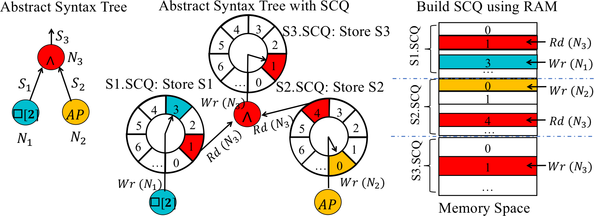
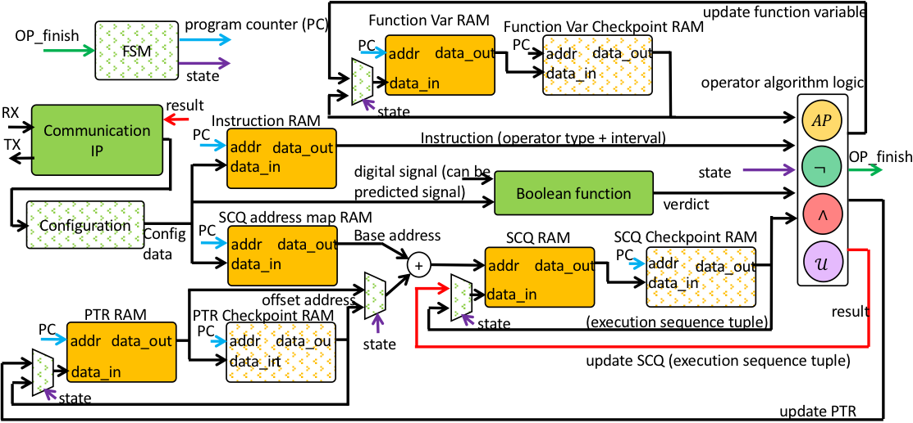
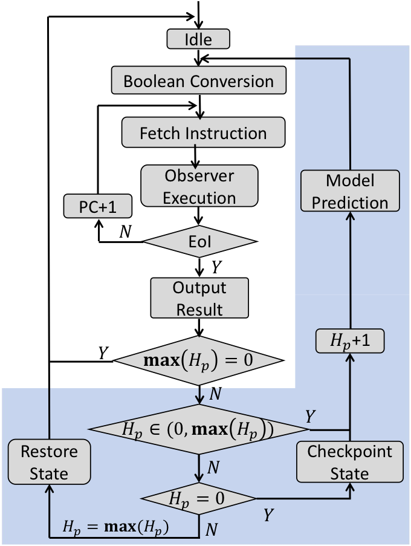
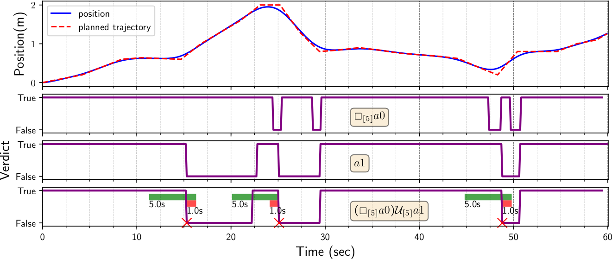

Model Predictive Runtime Verification for Embedded Platforms with Real-Time Deadlines
Pei Zhang, Rohit Dureja, Matthew Cauwels, Joseph Zambreno, Phillip H. Jones, Kristin Yvonne Rozier
Code and data to regenerate all experiment and analysis plots in the paper can be found HERE.
-------------------------------------
We include the hardware detail that is not covered in the submitted paper in this page.
Hardware Implementation of MPRV
Shared Connection Queue (SCQ)

Fig. 1. Implementation of SCQs between observer nodes.
An MLTL formula is represented as an abstract syntax tree (AST), where sub-formulas are depicted as nodes. To verify an MLTL formula at run-time, we encode each node as an asynchronous observer. We employ queuing structures that we refer to as Shared Connection Queues (SCQs) to buffer and communicate results produced by child nodes for consumption by their parents.
Unlike a traditional First In, First Out (FIFO) structure, which has one read pointer and one write pointer, our SCQ is a circular buffer consisting of one write pointer and one or more read pointers. This is a memory-efficient structure for implementing AST topologies that result from preforming Common Subexpression Elimination (CSE) on the conical form of an AST, often resulting in multiple parent nodes connecting to a common child. For our use-case, given an MLTL formula, sizing SCQs in accordance to the procedure given in Theory Proof Section guarantees SCQs never overflow. A similar data structure, called a Shared Ring Buffer (e.g., [wong2009oracle], [lee2009lock]) has been used in multi-threaded applications.
Fig. 1 illustrates how SCQs are embedded into an MLTL formula's AST. We implement SCQs from Block RAMs (BRAMs), a type of memory resource associated with Field Programmable Gate Arrays (FPGAs). These BRAMs provide a continuous memory space, which is partitioned into multiple SCQs. Each observer node has associated read and write pointers to manage its allocated SCQ memory.
Architecture Support for MPRV

Fig. 2. MPRV augmented RV engine. Components marked with dotted pattern represent newadditions or major revisions to R2U2 RV engine to support the predictive RV. For simplification,some arrows are disconnected but color-coded: result is red; state is purple; PC is blue; OP_finishis green. The yellow blocks are preexisting memory components.
The operator algorithm logic (Fig. 2) executes the generated assembly-code encoding of an MLTL formula across trace data provided by sensors. The asynchronous observer logic, defined in [reinbacher2014temporal], is synthesized into register-transfer level (RTL) language for computing MLTL operators. Before the RV engine starts, the binary formatted assembly instructions are loaded into the instruction RAM. When the engine starts, a Finite State Machine (FSM) manages the system's operating state by following a transition graph, as seen in Fig. 3.
The MPRV architecture consists the following primary components:
- Configuration IP: Component to communicate with the computer and the FPGA. We use UART in the design.
- Configuration: Component to use the pre-defined protocol to convert communication data into the format for the system configuration before the RV engine starts.
- Instruction RAM: Memory storage for the binary encoding of assembly instructions. We use the Program Counter (PC) to address instructions.
- Operator Algorithm Logic: Synthesized logical block implementing the Algorithms in [reinbacher2014temporal] for MLTL operators, and updates Function Var and PTR after operator execution.
- Boolean Function: An arithmetic block consisting of adders, multipliers, and comparators, which converts signals into $\mathcal{AP}$s.
- Function var RAM: Stores the algorithm's local variables for each instruction.
- SCQ: One RAM partitioned into SCQs for observer communication. Refer to $Memory\text{ }Space$ in Fig. 1.
- SCQ address map RAM: The base address for each instruction when accessing its SCQ. The address is decided by Algorithm 4 in the full version paper that splits the SCQ RAM for each instruction by specifying the address.
- PTR RAM: Pointer RAM. Each data content contains one write pointer and two read pointers for each instruction. The sum of the corresponding base address and the pointer is the absolute address ($Rd$ and $Wr$ in Fig. 1) to access the SCQ RAM.
- Checkpoint RAM: Memory component for checkpointing data before preforming prediction.
For the memory component, the write and read enable signal is controlled by the FSM. The Instruction RAM and the SCQ address map RAM content is online configurable and is capable of handling different MLTL formulas without resynthesizing the Register-transfer level (RTL) design. Fig. 3 details the hardware's state transition flow. Starting from idle, the verification process is triggered by the real-time clock (RTC) periodically. First the system conducts RV without prediction by using the available sensor information. The process of RV is marked by shaded blue in Fig. 3.

Fig. 3. Finite state machine transitions inside Fig. 2. The transition graph marked with a shaded background is the augmentation of the FSM within the RV engine to support prediction.
For RV without prediction ($max H_p=0$), the detailed process includes:
- reading digital sensor signals and converting into $\mathcal{AP}$s;
- loading instructions;
- loading the input data from SCQs or directly from $\mathcal{AP}$s, and fetching corresponding Function Var for the specific operator logic;
- execution;
- writing back results to SCQ, updating Function Var, and incrementing the PC.
- The RV engine outputs a result when PC reaches End of Instruction ($EoI$).
For RV with prediction, the system will checkpoint the current data content of the SCQ, PTR and Function Vars of the algorithm and conduct sensor value prediction, and repeat normal RV engine process based on the predictive sensor signals for some iterations according to the prediction steps until $H_p$ reaches $maxH_p$. After RV with prediction completes, the system state is restored from the Checkpoint RAM. The system then waits for new sensor data to arrive and repeat the process.
MPRV on the point-mass
For our example system, we have a point-mass of mass $m$. The objective is to have the point-mass follow a given trajectory to a desired location by applying an external force. The point-mass state-space model contains two state variables, namely its position $p$ and velocity $\dot{p}$. The input is a force $f$ applied to the point-mass. Using Newton's laws of motion, we can establish the following formula:
We convert this model from continuous-time to discrete-time based on a specific state sampling rate. For this example, a sampling rate of 10Hz is used.
The input force $u_k$ is a function of the state $x_k$ and control algorithm (e.g., MPC). Additionally, knowing the control algorithm and current state of the model allows us to estimate future states of the system.
We use an MPC controller to guide the point-mass along a predefined trajectory. The key point of MPC is to minimize a cost function subject to constraints. In our simulation, the input force is constrained to the range [-1N, 1N]. When minimizing the cost function, we associate a multiplicative cost weighting of 2 with the error in mass position and a weighting of 1 with its speed. The MPC prediction horizon has been set to 100 update steps into the future, and the controller actuation update rate to 10 Hz. The resulting trajectory of the point-mass compared to the planned trajectory is shown in the upper portion of Fig. 4.

Fig. 4. Model predictive control of the position of a point-mass, and verification results of three formulas. The colored bars in the bottom figure indicate the time when the system detects the error marked by red $\times$. The right end of each bar is the formula-violation detection-time using RV without prediction. The left end of each green (orange) bar is the formula-violation detection-time using MPRV with a prediction horizon of 5s (1s).
Let trace $\pi$ be a combination of predicates $a0$ and $a1$ at each time stamp. We specify the following Boolean mapping function to convert system states to atomics: $a0$: absolute value of trajectory error $<$ 0.1m, and $a1$: absolute speed $<$ 0.12m/s. These atomics are used within three MLTL formulas that are specified and evaluated in Fig. 4. For formula $\varphi$ in each figure, if the verdict is $\mathcal{true}$, it means that $\pi,t\models\varphi$, where $t$ is the corresponding x-axis value. Due to the nature of future time asynchronous observers, we may not know the valuation of $\pi,t\models\varphi$ until a time later than $t$. In Fig. 4, using colored bars, we show the "real-time" at which we are able to know (estimate) a formula becoming $\mathcal{false}$. This figure also compares the responsiveness of formula $(\square_{[5]}a0) \mathcal{U}_{[5]} a1$. (Note that the time intervals in the formula are converted into seconds to match with the graph. The real formula is $(\square_{[50]}a0) \mathcal{U}_{[50]} a1$ under 10Hz sample rate.) based on the deadline d=90 steps (9s) and d=50 steps(5s), which results in the max prediction horizon of 10 steps (1s) and 50 steps (5s) into the future according to Lemma of Worst-case Execution Time. The green bar is associated with a 50 step prediction horizon. The left boundary of the green bar is the time when MPRV detects the formula becoming $\mathcal{false}$, and right boundary is the time when a $\mathcal{false}$ valuation is detected without prediction. Similarly for a 10 step prediction horizon, the orange bar depicts this behavior.